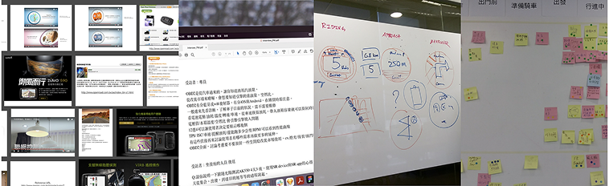
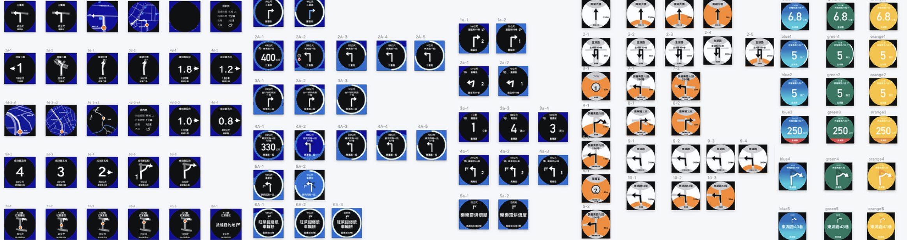
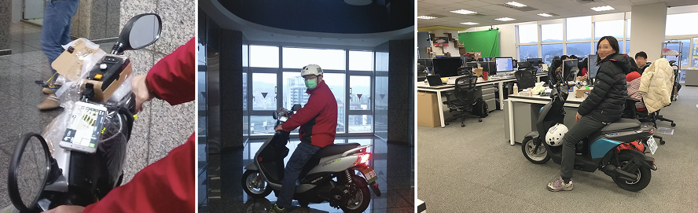
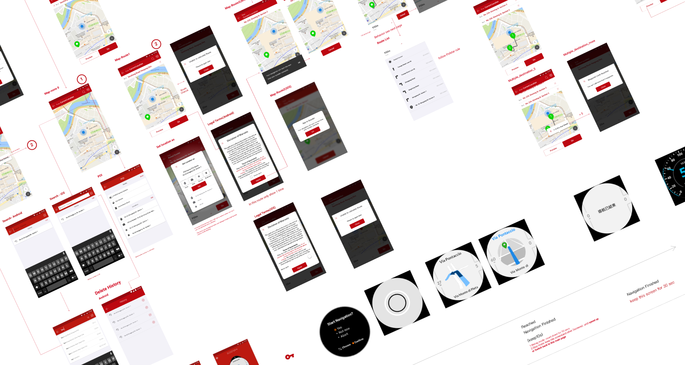
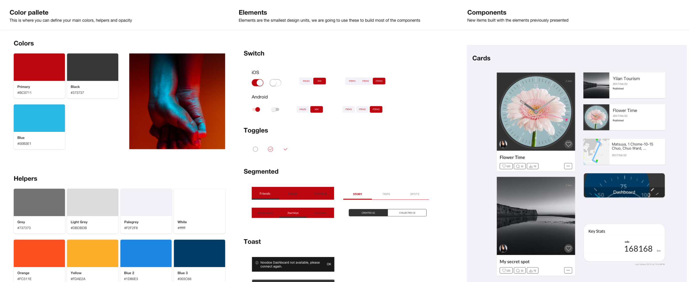
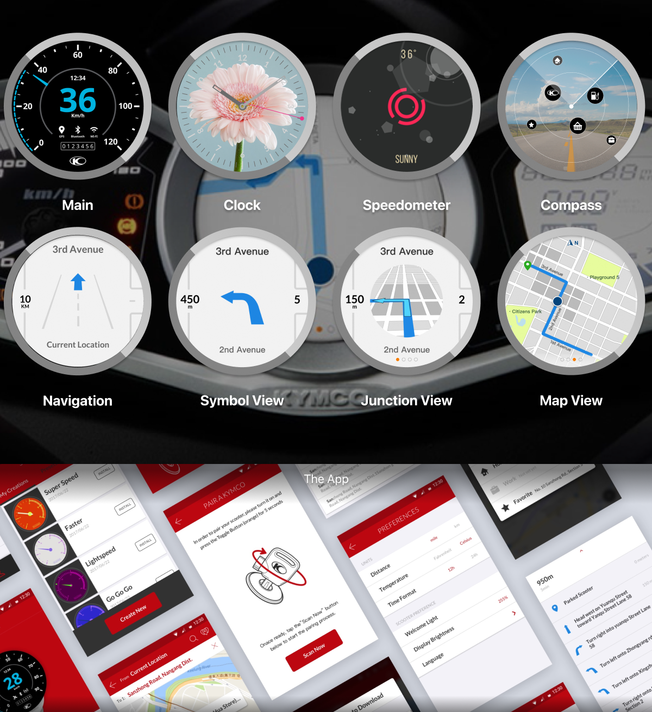
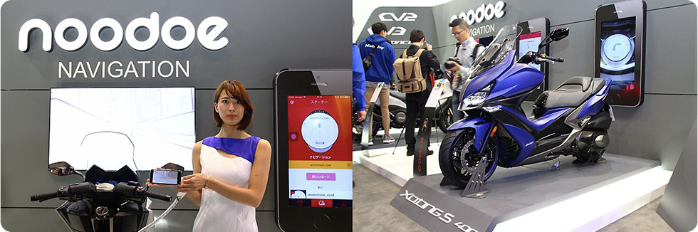

Case Study · Vehicle HMI
Navigation on Scooter
Redesigning a social scooter dashboard into a turn-by-turn navigation dashboard — information simple enough to read at a glance, safe enough to trust at speed.

From a social canvas to a navigation instrument
The device began life as a dashboard with a social purpose: users could design their own creations, sync them to the scooter dashboard, and share them on social platforms. The navigation function is an upgraded version of that same dashboard — which meant a lot of restrictions and limitations to overcome.
My mission was to create a good navigation experience for the rider. The dashboard shows turn-by-turn instructions while routing, with the phone and scooter connected via Bluetooth. The challenge: make the information simple, and let riders access it safely. I managed the entire UX and UI design from beginning to end.
Mission
Add navigation to the existing scooter dashboard — so the rider understands the next direction with a glance, in one second.
Challenge
Navigation is a crucial selling point for the vehicle, but the hardware could not change — the alpha version was already sold. The structure had to be redesigned purely through software.
Route instructions readable in a glance
Three layers of constraint boxed in the design before a single screen was drawn:
Hardware
Only three buttons for interaction, and limited Bluetooth bandwidth — every file transferred had to stay small. Adding hardware in the new update was impossible from the marketing perspective.
Firmware
The first version established an interaction structure riders already knew. A massive update would harm the experience, so navigation had to follow the original architecture.
App
The app's information architecture wasn't built for navigation. We had to construct a new structure to house map purchase, route settings, and navigation itself.

Through discovery and brainstorming with the team, we found several possible directions — with one hard limitation: this is a simple device, and its computing power is not robust. Showing the map view of Google Maps or a portable car GPS was simply impossible.
How do riders know the right corner to turn?
After several discussions we landed on five candidate indicators, each a different answer to the same question:
Streetview Indicator
Display the street view on screen before the corner.
Ring Indicator
Display a ring as a countdown timer before the turn.
Number Indicator
Display the remaining distance before the junction.
Background Indicator 1
Decrease the background color as the turn approaches.
Background Indicator 2
Notify the rider by changing the background color.

Rapid prototypes, real roads, no verbal instructions
We weren't sure which concept worked best for riders, so we built rapid prototypes and tested whether riders could reach a defined destination without any verbal instructions. The results:
Streetview Indicator
The screen displays street view 10 meters before the corner — but a rider cannot carefully read map details. Very dangerous, and it fails to prompt the next action.
Ring Indicator
A countdown ring is too abstract. While riding, anything that requires a second thought introduces danger — the ring never made the shortlist.
Background Indicator 1
Fading the background over time went unnoticed. The rider's verdict: "I didn't notice it — and missed the corner."
Background Indicator 2
Changing the background color before the corner met the same fate — riders didn't see it and missed the turn.
Number Indicator
Showing the distance before the junction was, in riders' words, very clear about when to act — even if it wasn't the most beautiful visual among the prototypes.

The clearest instruction wins: the Number Indicator
A rider cannot afford to be distracted while driving, and subtle indicators simply don't deliver the message. The best option turned out to be the most specific one — the Number Indicator. It is the clearest for the rider, so they understand the next action in a glance.
From wireframe to a shippable system
Using the feedback gathered from testing and discussions with teams, we created wireframes proposing solutions for the critical issues. After alignment, we converted the wireframes into UI flows.

For the design system, consistency with the scooter brand and the previous version came first: we kept the app color in red, with blue and dark gray as secondary and helping colors.

Working with the firmware and software engineering teams, we ran several important iterations to make sure the design was developable — and with the quality assurance team to ensure the visuals on the scooter dashboard displayed clean and correct.

Go to market
In 2018, Kymco announced a brand-new navigation dashboard for scooters — the Noodoe Navigation, the first embedded scooter navigation system in the world. It helped push Kymco's scooter sales to the top in Taiwan in the following quarter.
The rider understands the next direction with a glance — in one second.Design goal, achieved in production
